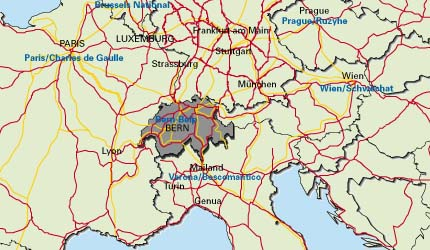

| Verkehr | |||
| Dank seiner zentralen Lage und einem guten Anschluss ans nationale und internationale Verkehrsnetz bietet Bern kurze Reisewege nach allen wichtigen Zielen in der Schweiz und in Europa. | |||
| Ausgebaute Autobahnen verbinden Bern nahtlos mit allen grossen Städten in Europa. Im innerregionalen Strassenverkehr sind Staus eine seltene Ausnahme - ein nicht zu unterschätzender Vorteil für gestresste Führungskräfte. | |||
| Das ausgezeichnete Angebot öffentlicher Nahverkehrsmittel wird von über 50% der Arbeitspendler und -pendlerinnen täglich benutzt. | |||
| Bern ist aber auch die erste Stadt in Europa mit Anschluss an alle drei Hochgeschwindigkeits-Zugsysteme. Sie wird sowohl vom TGV (Paris), vom Pendolino (Milano) als auch vom ICE (Berlin) bedient. | |||
| Der leistungsfähige Flughafen Bern-Belp, in 12 km Entfernung vom Stadtzentrum, bietet im europäischen Regionalluftverkehr tägliche Verbindungen nach Amsterdam, Brüssel, Frankfurt, Köln, London, München, Paris, Prag und Wien. Die Abfertigungszeiten auf diesem Kleinflughafen sind traumhaft kurz... | |||
 |
|||